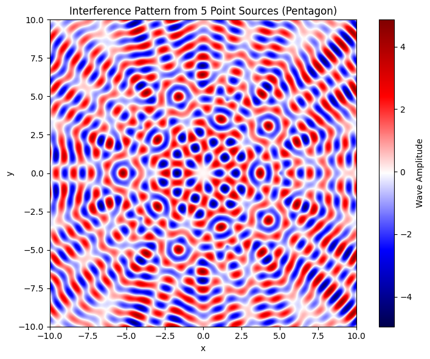
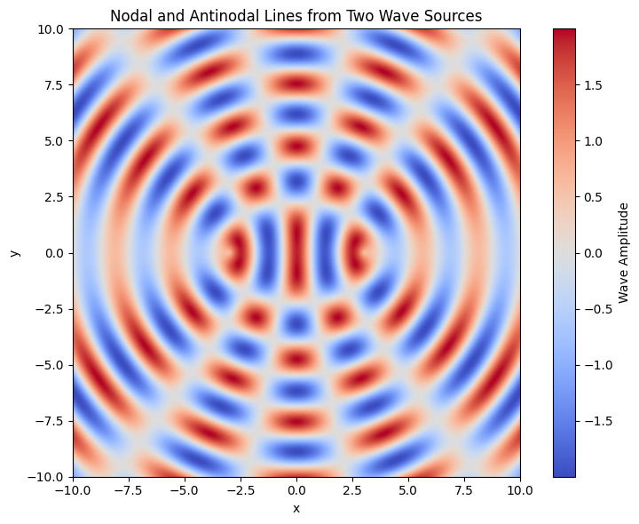
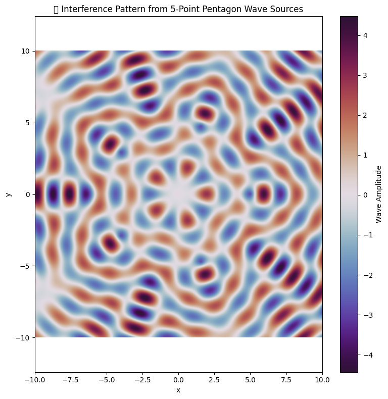

Interference Patterns on Water Surfaces
When waves generated from multiple sources interact on a water surface, they produce interference patterns. These are visual manifestations of the superposition principle, which states that overlapping wave disturbances add together algebraically to form a new wave pattern.

Types of Wave Interference
Constructive Interference
Occurs when wave peaks (crests) or troughs align, amplifying the overall displacement and producing larger waves.
Destructive Interference
Happens when a crest meets a trough, reducing or completely canceling the wave's displacement.
How Interference Is Observed
These patterns can be seen in controlled environments like a ripple tank or in natural settings such as:
- Raindrops hitting a still pond.
- Two objects dropped into water simultaneously.
- Reflected waves interacting with incoming waves near edges or obstacles.
The result is a series of repeating bright (high-energy) and dim (low-energy) zones, forming rippling bands or curves.
Pattern Features
- Nodal Lines: Boundaries of destructive interference—typically calm or unmoving.
- Antinodal Lines: Peaks of constructive interference—where motion is most intense.
- Geometric Symmetry: The interference pattern reflects the symmetry of the wave sources.

Interference from Polygonal Wave Sources
Now, let’s simulate wave interference from sources arranged at the vertices of a regular polygon. We'll use a pentagon for illustration.
1. Choose a Polygon Shape
We select a regular pentagon with five vertices evenly spaced on a circle centered at the origin. The radius \( R \) defines the distance from the center to each source.
2. Place the Wave Sources
Each source is positioned using the parametric equations:
Where:
- \( N = 5 \) (number of vertices/sources)
- \( j = 0, 1, 2, 3, 4 \)
- \( R = 5 \) (chosen radius)
3. Wave Expression for Each Source
Every source emits a radial wave described by:
Where:
- \( \phi_j \) is the wave from source \( j \)
- \( d_j(x, y) = \sqrt{(x - x_j)^2 + (y - y_j)^2} \)
- \( k = \frac{2\pi}{\lambda} \) is the wave number
- \( \lambda \) is the wavelength
4. Compute Total Interference Pattern
Using the principle of linear superposition, the total wave at point \( (x, y) \) is:
This overall wave function \( \Phi(x, y) \) reveals the interference pattern created by the polygonal arrangement of wave sources.
Pattern Highlights
- Pentagonal symmetry due to the 5-point source layout
- Clear nodal regions (destructive interference zones)
- Intense antinodal regions (constructive interference zones)
- This creates a visually striking 2D pattern

Applications and Insights
These simulations deepen our understanding of:
- Interference in optics (e.g., multi-slit experiments)
- Sound wave interference and applications in audio engineering
- Seismology and the behavior of earthquake waves
- Generative art and simulation-based design
Studying wave interactions from geometric source arrangements helps reinforce foundational physics concepts and provides visual tools for analysis.